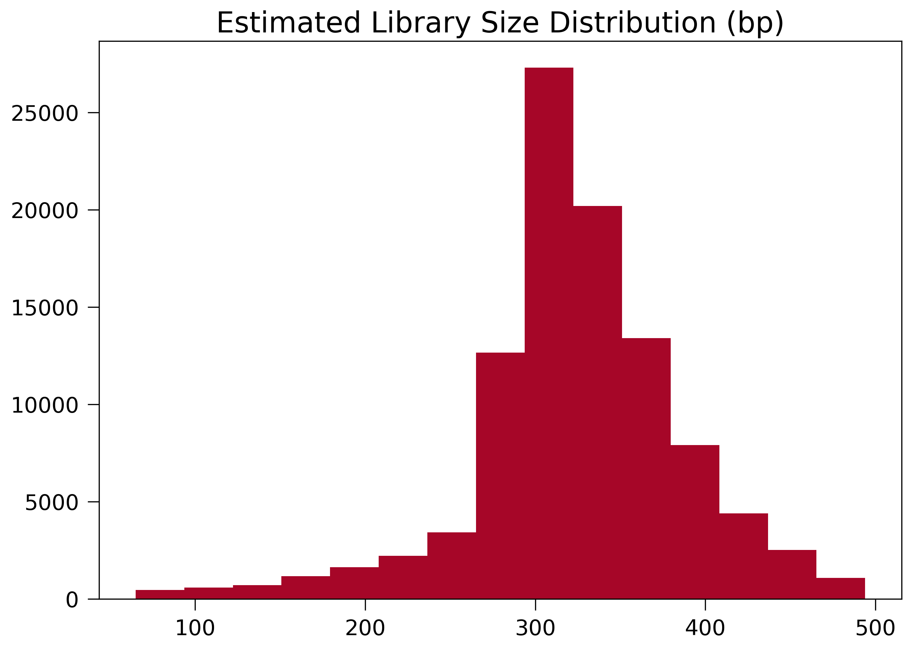
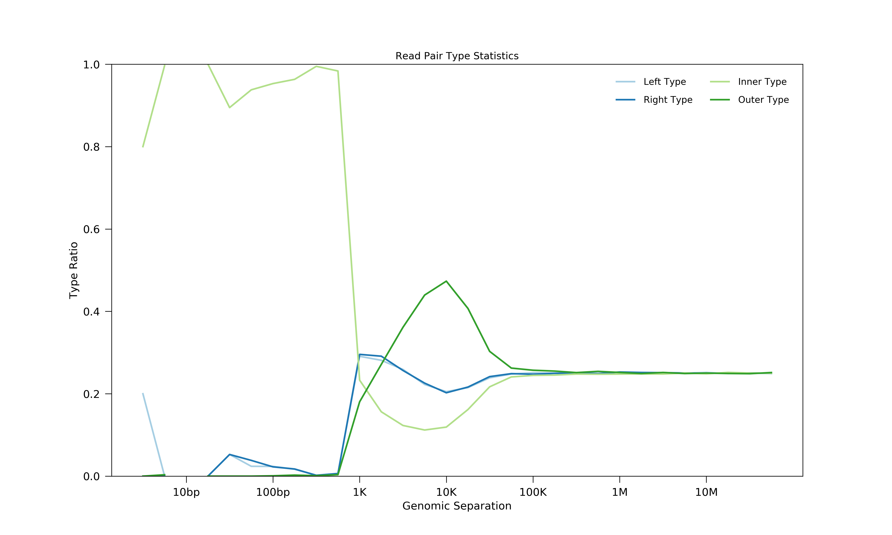

Experiment Quality Assessment¶
In this tutorial, I will show you how runHiC can be used in data quality assessment.
All you need to type in is a sinlge-line command after running runHiC filtering or runHiC pileup (refer to quickstart for more details):
$ runHiC quality -m datasets.tsv -L filtered-hg38
Statistic Table¶
Statistic tables on sequencing reads can be found in .stats files under *filtered-hg38
Here’s a snapshot:
000_SequencedReads: 14332993
010_DoubleSideMappedReads: 10323445
020_SingleSideMappedReads: 3238504
030_UnmappedReads: 771044
100_NormalPairs: 10323445
110_AfterFilteringReads: 9050818
120_SameFragmentReads: 1193185
122_SelfLigationReads: 245343
124_DanglingReads: 934456
126_UnknownMechanism: 13386
130_DuplicateRemoved: 79442
400_TotalContacts: 9050818
410_IntraChromosomalReads: 4170313
412_IntraLongRangeReads(>=20Kb): 2812664
412_IntraShortRangeReads(<20Kb): 1357649
420_InterChromosomalReads: 4880505
Critical Indicators:
Double Unique Mapped Ratio = 10323445 / 14332993 = 0.7203
Self-Ligation Ratio = 245343 / 14332993 = 0.0171
Dangling-Reads Ratio = 934456 / 14332993 = 0.0652
Long-Range Ratio = 2812664 / 9050818 = 0.3108
Data Usage = 9050818 / 14332993 = 0.6315
The following table lists possible statistic names and their meanings:
Statistic Name |
Meaning |
|---|---|
000_SequencedReads |
Total number of sequenced read pairs |
010_DoubleSideMappedReads |
Number of read pairs of which both sides can be uniquely mapped to the reference genome. |
020_SingleSideMappedReads |
Number of read pairs of which only one side can be uniquely mapped to the reference genome. |
030_UnmappedReads |
Number of read pairs of which neither side can be uniquely mapped to the reference genome. |
100_NormalPairs |
Number of read pairs of which both sides can be uniquely mapped. |
110_AfterFilteringReads |
Number of read pairs that have passed all filtering criteria. |
120_SameFragmentReads |
Number of read pairs of which both sides are mapped to the same restriction fragment. Such read pairs are filtered out in our pipeline. |
122_SelfLigationReads |
Number of read pairs deriving from self-circularized ligation product. The two sides are mapped to the same restriction fragment and face in opposite directions. |
124_DanglingReads |
Both sides of these read pairs are mapped to the same fragment and face toward each other. There can be many causes of such products, ranging from low ligation efficiency to poor streptavidin specificity. |
126_UnknownMechanism |
Unknown sources of “120_SameFragmentReads”. Both sides are mapped to the same strand. |
310_DuplicatedRemoved |
Number of read pairs from PCR products. |
400_TotalContacts |
Number of read pairs from true contacts, i.e., the remaining read pairs after all filtering processes. |
410_IntraChromosomalReads |
Number of intra-chromosomal contacts |
412_IntraLongRangeReads |
Number of long-range contacts (genomic distance >= 20Kb) |
412_IntraShortRangeReads |
Number of short-range contacts (genomic distance < 20Kb) |
420_InterChromosomalReads |
Number of inter-chromosomal contacts |
Note that we try to organize these statistics hierarchically using indentation, so that, for example, “010_DoubleSideMappedReads”, “020_SingleSideMappedReads” and “030_UnmappedReads” constitutes “000_SequencedReads”.
At the bottom of the statistic table, we include some important quality indicators:
Unique-Mapping Ratio. Low value of this metric indicates low sequencing quality, sample contamination or incomplete genome assembly.
Self-Ligation Ratio.
Dangling-Reads Ratio.
Long-Range Ratio. Low value (<0.15) of this metric indicates the failed experiment.
Library-size Estimation¶
Dangling reads can be applied to estimate your library size in nature. Here’s an example of size distribution of dangling read molecules for typical 300~500bp library:
The inconsistency between this distribution and the experimental library size suggests a failure in DNA size selection.
Read-pair Type Plotting¶
Read-pair type ratios will also be reported under filtered-hg38. Intra-chromosomal contacts are broken down into four types: “left pair” (both sides map to the reverse strand), “right pair” (both sides map to the forward strand), “inner pair” (two sides map to different strands and point towards each other) and “outer pair” (two sides map to different strands and point away from one another). If reads come from proximity ligation, each pair type should account for roughly 25% of contacts. Thus, distance at which the percentage of each type converges to 25% is a good indication of the minimum distance at which it is meaningful to examine Hi-C contact patterns. Here’s an example below:
We can see a distinct turning point around 40Kb. While there may be several unknown mechanisms making biases below this point, we should only consider contacts whose genomic distances are greater than 40Kb in the following analysis.